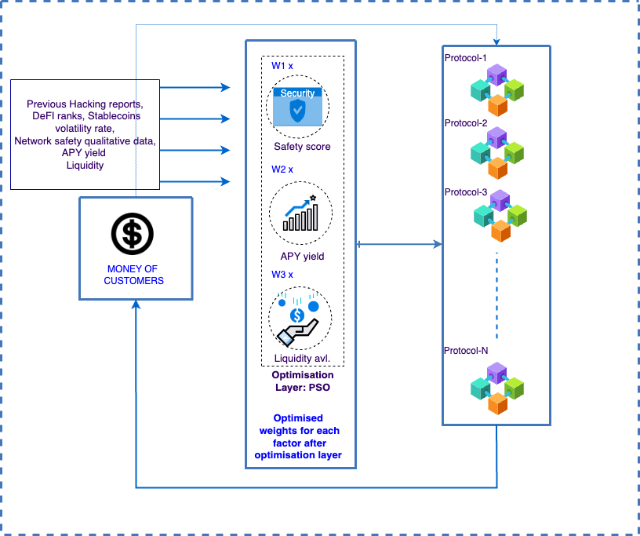
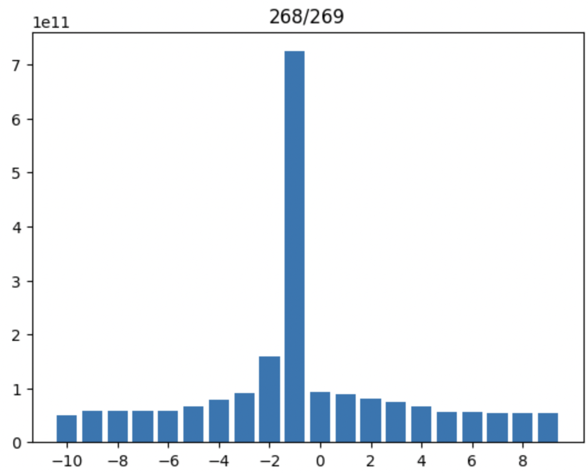
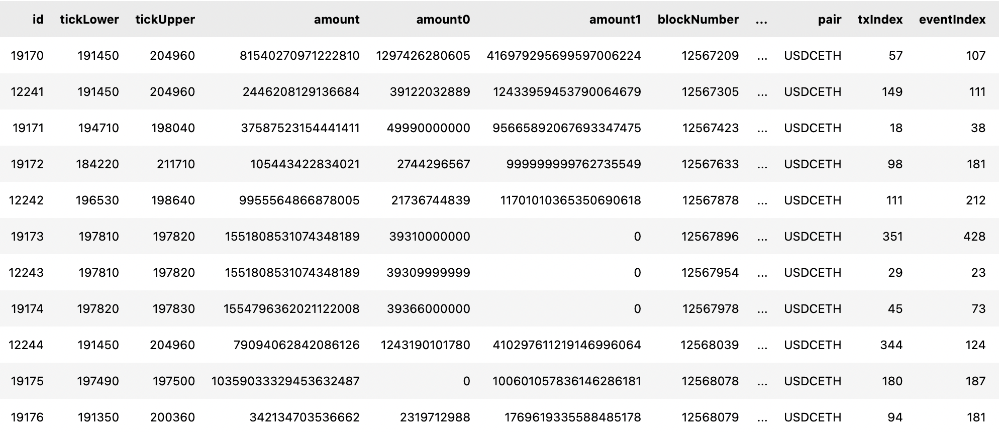

Head of Quants of Neev Finance
In Neev, he has been a co-founding team member since Aug of 2021, which is an early-stage bootstratpped startup based out of Seattle, US. He has joined Neev when it was only at an ideation stage and started taking up cross sectional responsibilities, along being a PM, his main job is revolving around deriving, creating qunat based financial strategies and also perform any necessary modelling of any financial aspects needed within the team.
Work as a Quant expert
This particular section talks about the work related to Quantitative head in various fields such as financial investment strategies, crypto assets, DeFi investment strategies, financial risk scenario generation, other necessary corporate financial modelling
1. DeFi investment strategies
This is more of a strategic DeFi trader kind of execution. Firstly at data collection phase, more 67+ DeFi procotols are researched including lending, Yield aggregators along with their satefy history and the network that they're built on, historical APY/APR trend. By collecting these data a safety score is formed. APY is kept as 2nd variable and finally the availibility of that particularliquidity on a protocol is kept as 3rd variable. Then they system is put into an weight matrix intialization with 35-30-35 ratio and PSO optimization algorithm set up is build to get the optimal weights for high yield generation. The DeFi protocols currently in use are mainly L2 protocols. This strategy was generating around 17% till May 2022. Now it's generating 10.72% on average variable APY excluding all gas fees.

2. Volatlie shorting DeFi
The Volatile coin(95% ETH) was put under straddle options strategy( buy put and call 7:3) and then stake the ETH to a staking protocol with higher APY.The strategy works like that if ETH goes down, there should not be any loss and if eth goes up, that positioned should be long and on the expirary day if the gas fees are included and the change of ETH price is significant than the strike price, another staking position is opened after the executing the buy call.
Ongoing Strategy Research:
-
Uniswap V3 optimization:

In this strategy, the Idea is to utilize the Uniswap V3 LPs with optimal positioning of the ticks( liquidity essentially). Uniswap V3 introduces the option of choosing the real reserve range which will provide the possible range where the chances of trade happens. The historical data of USDC-USDT and USDC-ETH of ethereum network based pools are collected and APYs are simulted at different time periods for a year with different Prices and ticks, and those simulations where then went through genetic algorithms. The USDT-USDC pool generated around 5-6% whereas ETH-USDC pool can geenration 65% + APR. Price flucctuation is an exposure with volatile pool, that's why currently a 2-frame based system is getting tested where, ETH/USDC momentum tracing will be happening over one exchange and acoording to the trend changing percentage, in uniswap, a particular tick range positions will be opened and previous one will be closed.
-
Risk-Free return:

He is working currently building on insurance based models with Lending and borrowing options opened and payout fee premium to lenders and take premiums from borrowers. Also, He is working on collaboration with 3rd party FDIC Insured banks to get the FDIC security with in the company. Also he is cur exploring and drawing out different financial risk scenario modellings with T-bills and CD rates to solve the issue of risk-free return and also assess the risk solvency in the strategy.